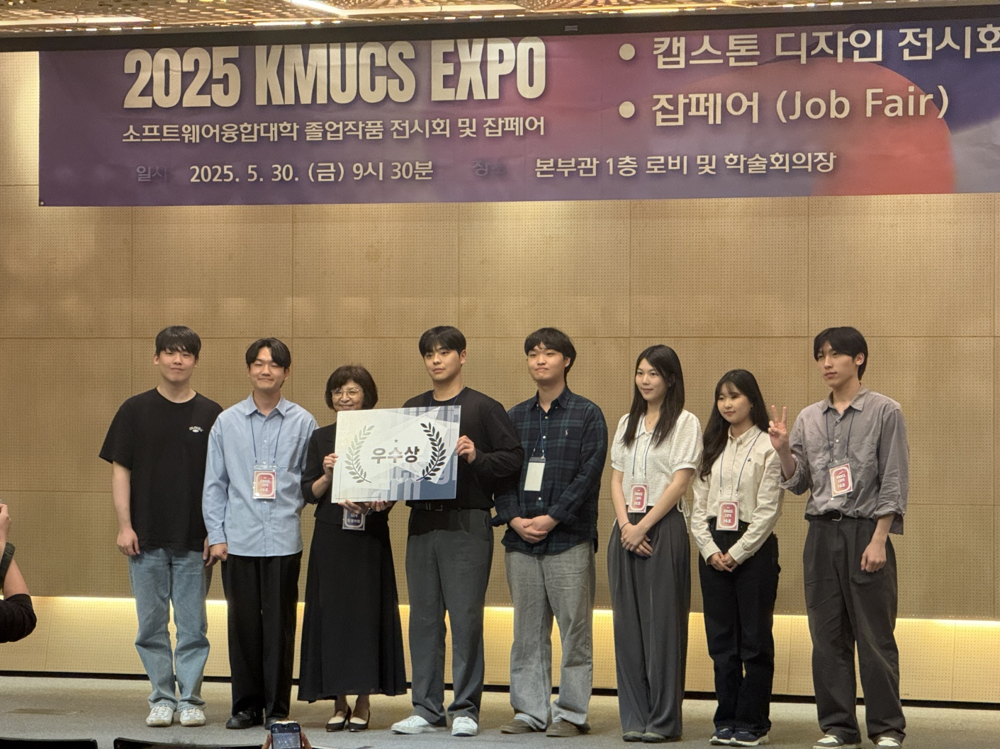

Korea University College of Medicine
MICU 저나트륨혈증 환자의 전해질 반응 및 수액치료 예측 연구를 진행하고 있습니다. 임상 변수 정의, 결측/치료 시점 해석, feature set 구성, 평가 기준 및 해석 가능성 검토를 맡고 있습니다.
AI Researcher & Engineer
의료 CDM, 병리 이미지, Machine Unlearning, Kaggle 대회, CAD/DXF 기반 견적 시스템, 운영 대시보드까지. 저는 새로운 데이터를 이해하고, 검증 가능한 AI 실험과 실제 제품 흐름으로 연결하는 일을 해왔습니다.


Research
MICU 저나트륨혈증 환자의 전해질 반응 및 수액치료 예측 연구를 진행하고 있습니다. 임상 변수 정의, 결측/치료 시점 해석, feature set 구성, 평가 기준 및 해석 가능성 검토를 맡고 있습니다.
의료 CDM, 병리 이미지, 임상 데이터 기반 AI 연구를 수행했습니다. Bento/CDM Explorer, H&E/IHC registration, LightGlue/SuperGlue matching, cell segmentation, 단백질 변이 기반 MCP 서버를 다뤘습니다.
Machine Unlearning에서 gradient similarity 기반 weight initialization을 연구했습니다. pruning, KD, poisoning, retain/forget 성능과 privacy metric을 실험해 PoPETs 2026 채택 논문으로 이어졌습니다.
Builds
연구자가 의료 CDM 데이터를 탐색하고 자연어/논문 입력에서 코호트 조건을 만들 수 있도록 돕는 의료 연구지원 플랫폼입니다.
LoRA/PEFT reasoning adapter 대회 실험입니다. verifier audit, failure taxonomy, adapter diversity, TIES/DARE/model-soup 전략을 정리했습니다.
이안건설엔지니어링과 협업 중인 전기공사 도면 기반 견적/배선 경로 최적화 앱입니다. DXF 좌표계, overlay, patch bbox, Hanan Grid/Steiner routing을 정리했습니다.
뉴스와 가격 데이터를 함께 보는 로컬 분석 대시보드입니다. 뉴스 원문, 판단 근거, 호재/악재/중립 분류를 남겨 사람이 더 빠르게 검토하도록 돕습니다.
샘플 발송 Excel 데이터를 SQLite에 적재하고 웹 대시보드, 보고서 생성, 룰 기반 질의응답을 제공하는 내부 운영형 데모입니다.
task-level graph/ONNX profiling과 compact graph-surgeon blending을 실험했습니다. score progression 로그 기준 graph surgeon score 6405.61까지 추적했습니다.
ESM/ProtBERT-style embeddings, ontology features, stacking, XGBoost/scikit-learn 기반 단백질 기능 예측 실험을 정리했습니다.
Proof
Gradient similarity 기반 weight initialization을 활용한 Machine Unlearning 연구.
Private 데이터 일반화와 retain/forget 균형을 중심으로 팀 실험 전략을 검증했습니다.
의료 CDM 플랫폼, 저나트륨혈증 연구, Bento 캡스톤 프로젝트 성과를 포스터와 전시회에서 인정받았습니다.

의료 AI, 데이터 시스템, Kaggle-style experimentation, AI 에이전트/MCP 기반 업무 자동화에 관심이 있습니다.
bgw4399@gmail.com